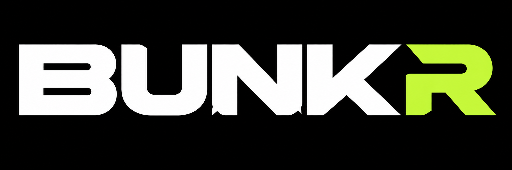
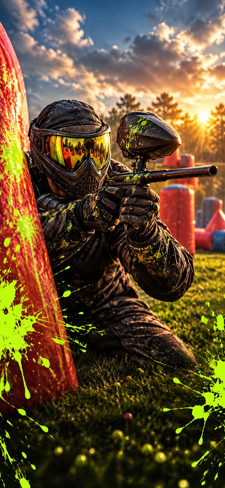
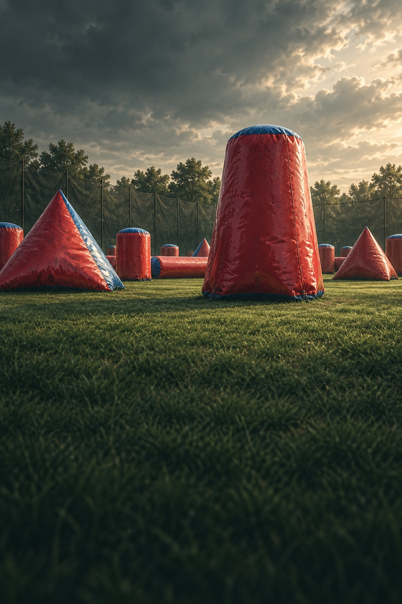
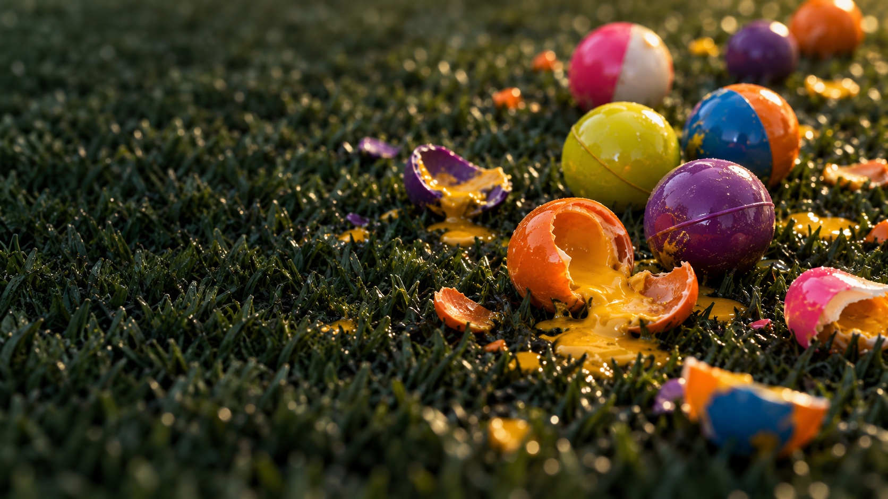

Find your field.
Discover nearby paintball fields and find your next place to play.

LESS SCROLLING. MORE PAINTBALL.
Find your field. Find your people. BUNKR brings play days, teams, and walk-ons together—so you know what’s happening before you pack your gear.
Free to play. Free to connect. Launching soon.

THE GAME PLAN
No more piecing together posts, group chats, and field pages. Get a clearer picture of your next day out.
Discover nearby paintball fields and find your next place to play.
See upcoming days and who’s planning to be there before you make the drive.
Check in as a solo player, team, or group. Help everyone know what kind of game to expect.

MAKE THE DRIVE.
KNOW THE GAME.
YOUR GAME. YOUR PEOPLE.
“23 people are going” only tells you so much. Know how they’re showing up, too.
Heading out on your own? Let others know you’re coming and looking to jump into a game.
Announce your team and division. See which other teams are coming and plan for practice.
Friends, coworkers, or a birthday crew. Share your approximate group size so everyone knows what to expect.
BUILT BY A PLAYER. FOR PLAYERS.
“Driving out to a field, unloading all my gear… and realizing nobody showed up.”
The fear that sparked BUNKR.
Back in the early 2000's, I played almost every weekend. A quick look at PBNation’s local threads told you where everyone was going.
Coming back more than 15 years later, the community was still there. Finding it meant digging through Facebook, Instagram, Discord, Reddit, and a dozen group chats.
I built BUNKR to bring some of that connection back: one place to find a field, see who’s coming, and get out and play.
If it gets a few former players back on the field—or saves someone a trip to an empty one—I’ll consider it a win.
FOR THE LOVE OF THE GAME
Finding people to play with shouldn’t come with a subscription.
The plan is to stay ad-free as long as costs stay reasonable. If brand partnerships happen, the goal is useful perks for players.
Built with modern authentication and backend services. BUNKR isn’t being built to collect and sell your data.

SEE YOU AT THE FIELD
Your next good day of paintball starts with knowing who’s in.
BUNKR is coming to iOS and Android.